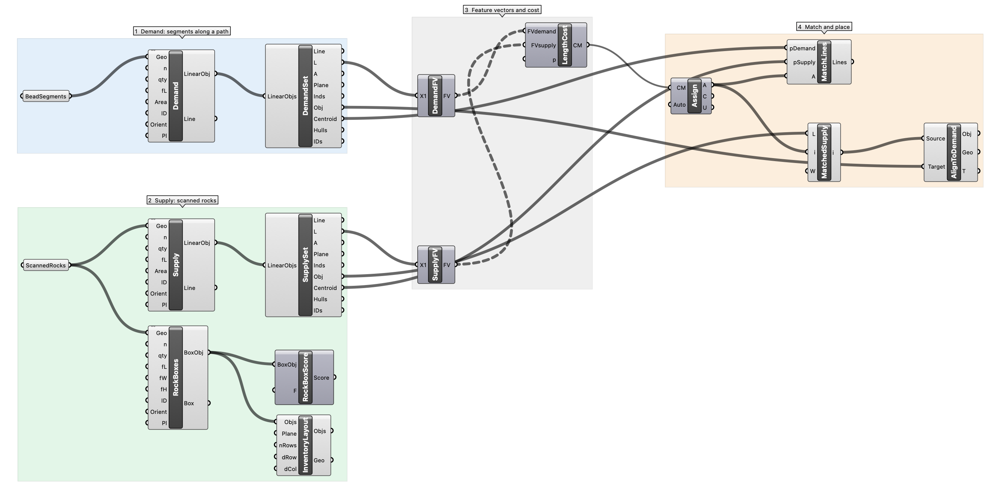

Scanned objects
Work with irregular, scanned pieces such as rocks, rubble or found objects: abstract them, inspect how well each abstraction fits, lay the inventory out, and place pieces along a design. The example "beads" rocks along a path: each segment of the path gets a rock of matching length.
Example file: 04_scanned_rocks.gh. The demand is a curved path divided into segments of 280–520 mm with small gaps; the supply is thirty scanned rocks (meshes). Units are millimetres.

1. Demand: segments along a path
The segments go into a LinearObject and LinearSet, which give each segment's length and position.
2. Supply: scanned rocks
The rock meshes go into a LinearObject and LinearSet. For meshes, DCT uses every vertex as a sample, so NumSamples has no effect; PCA finds each rock's longest direction, and EffectiveLength is its extent along that direction.
The same meshes also go into a BoxObject, which serves two side tasks:
BoxScoremeasures how well a box represents each rock (0 is a perfect box). Use the scores to sort an inventory, for example to separate block-like stones from round ones.Knolllays the whole inventory out on a grid, each rock turned so its longest axis runs along the grid's Y direction: a quick way to survey a scanned inventory.
3. Feature vectors and cost
Both sides get a FeatureVector of EffectiveLength. Here EuclideanCost (Power 1) is used instead of the asymmetric metric, because rocks cannot be cut: a rock slightly shorter than its segment is as good as one slightly longer.
4. Match and place
Assign assigns a rock to each segment, and AlignToObject moves each rock onto its segment, with its longest axis along the path.
Variations
- Orientation: a rock's rotation about its long axis is set by its PCA frame. To control which face is up, override the frame with
OverridePCAor rotate it withRotatePCAbefore aligning. - Volumetric matching: use
BoxObjectandBoxSetwith length, width and height as features to fill boxes (gabions, wall courses), orSphericalObjectandSphereSetwhen only overall size matters. - Heavy scans: dense meshes (hundreds of thousands of vertices) are analyzed in parallel; enable Grasshopper's Parallel Computing option on the constructor. Reducing the meshes first is still the fastest option.